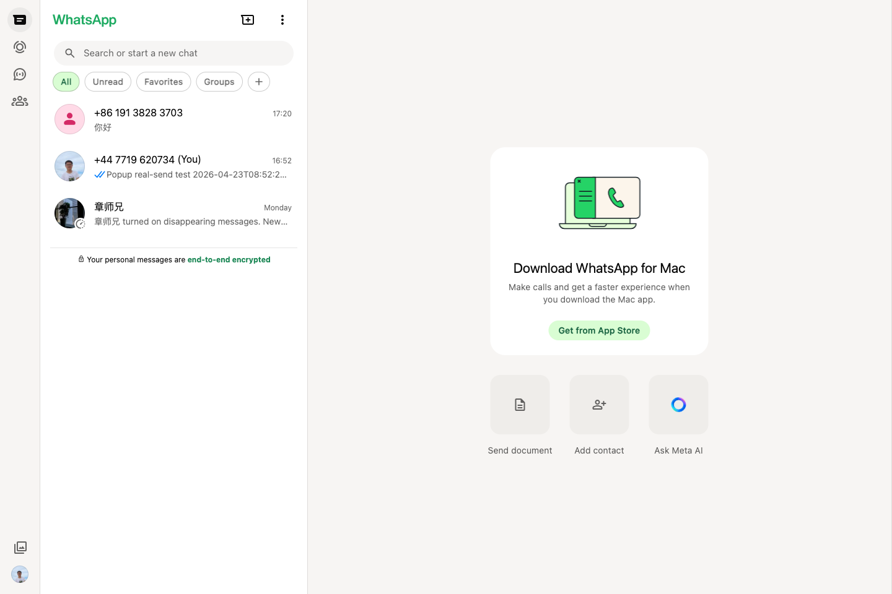
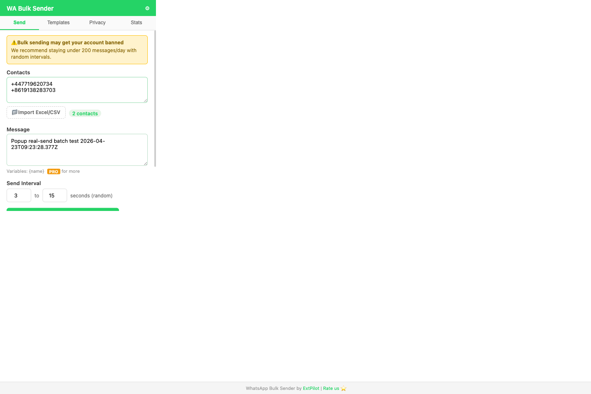
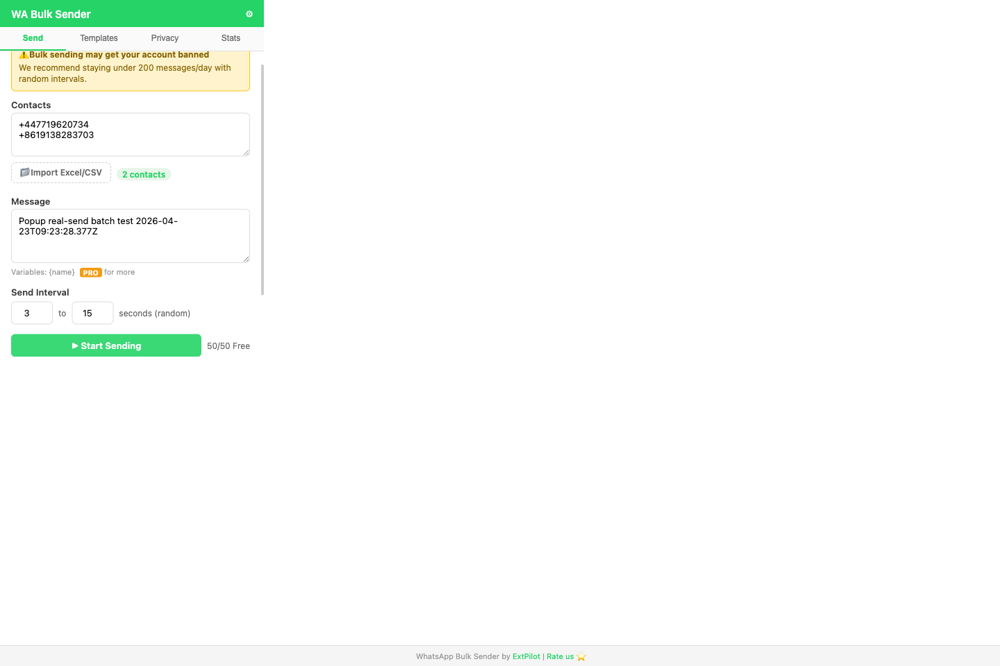
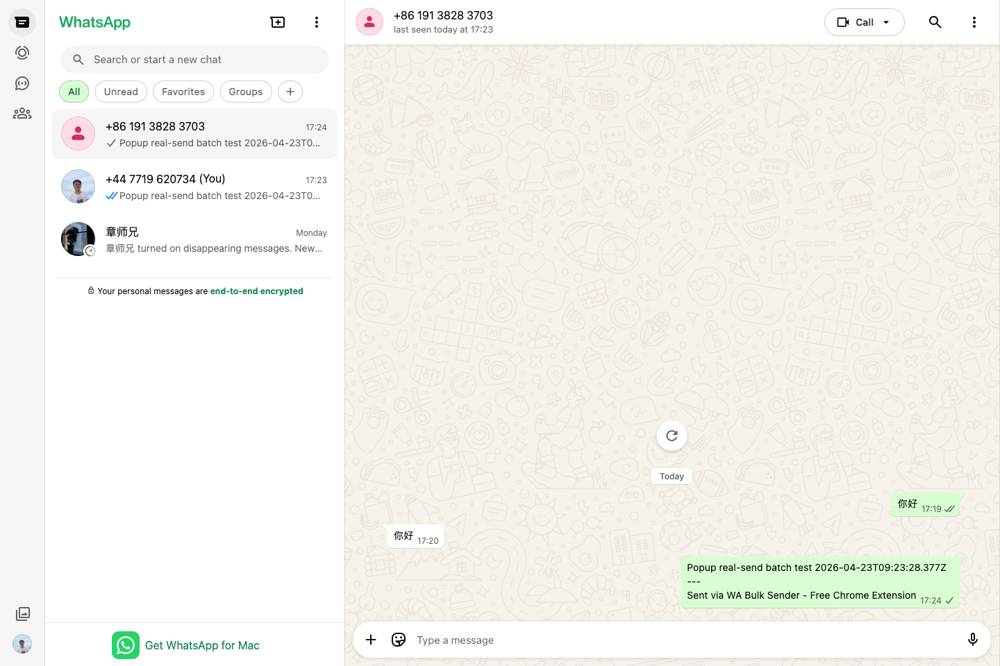

How to Send WhatsApp Bulk Messages from WhatsApp Web (2026 Guide)
Why use WhatsApp Web for batch sending?
For most small businesses and solo operators, the WhatsApp Business API is overkill. It requires setup, approval, and ongoing platform constraints. If your real job is sending follow-ups, reminders, or simple campaign messages to a few dozen or few hundred existing contacts, working directly in WhatsApp Web is much faster.
The extension-based workflow keeps you inside the same browser surface you already use. Instead of opening one chat at a time, you prepare a list of contacts, write one reusable message, and let the send flow move through WhatsApp Web for you.
Step 1: Open WhatsApp Web and prepare your contact list
Start at WhatsApp Web. Make sure your account is already logged in and stable before you try batch sending.
You can either paste phone numbers manually or import them from Excel / CSV. For spreadsheet imports, the most important requirement is a valid phone column. Other columns can later be used as variables like {name}.

Step 2: Fill the popup and choose a safe send interval
Open the extension popup and paste numbers or import your spreadsheet. Then write your message and choose a send interval. A random interval matters because it prevents your workflow from looking too mechanical.
The free tier of WhatsApp Bulk Sender & Privacy Guard includes Excel import, which is notable because several established tools in this category still reserve spreadsheet import for paid plans.

Step 3: Start the batch run and monitor progress
Once you click start, the extension opens each chat, types the message, sends it, and moves on to the next number. The core UI you need during this phase is simple:
- Current progress
- Success / failed / skipped counts
- Pause and resume
- Retry failed contacts
That is more useful than a flashy dashboard. In real operation, the important thing is whether the next chat opens correctly and whether the send state can recover after navigation.

Step 4: Review results and export a report
After the run finishes, export a CSV so you know which contacts succeeded, failed, or were skipped. The free export includes phone and status; the Pro export adds timestamp and error details for better debugging and retry workflows.
In our latest real-world validation, the current build completed a two-contact batch send successfully with zero failures after the popup/background/content-script routing issue and chat-opening recovery logic were fixed.

What to look for in a WhatsApp bulk sender
- Spreadsheet import: If Excel import is locked behind Pro, the free product is usually too limited to evaluate properly.
- Visible send status: You need success, failed, and skipped counts, not just a spinner.
- Pause / resume: Any real outreach workflow needs recovery controls.
- Minimal permissions: Prefer tools limited to WhatsApp domains instead of broad host access.
- Privacy mode: Useful if you demo your setup or work in public spaces.
What makes this workflow different?
Most competing products in this category fall into two traps: they either gate the useful input method behind Pro, or they treat activation and upgrades as a manual code-entry process. The ExtPilot approach is to keep the first useful workflow free and keep the paid plan cheap enough that upgrading does not feel like a commitment.